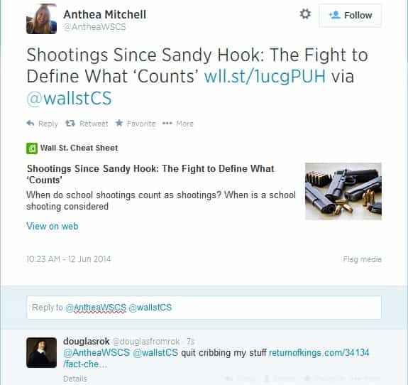

Douglas is Returnofkings.com's Chief Investigative Journalist, booze expert and part time soldier. Send tips or hate to [email protected] or if you are on twitter @douglasfromrok


One morning last week I was perusing my Facebook feed will sipping my Earl Grey tea. An article linked by one of my friends looked familiar to me. I clicked on it and it looked quite similar to this one. This article of mine deals with Mr. Bloomberg and his Everytown.org’s methods of tallying gun crime. This other article looked very similar. While Mr. Bloomberg’s campaign against guns is well known and methods easily discerned, this article seemed more than coincidental convergence to me. From there, I started to investigate.
From Wikipedia.org:
In espionage parlance, a cut-out is a mutually trusted intermediary, method or channel of communication, facilitating the exchange of information between agents. Cutouts usually only know the source and destination of the information to be transmitted, but are unaware of the identities of any other persons involved in the espionage process. Thus, a captured cutout cannot be used to identify members of an espionage cell.
The first thing I noticed was that the main content of this article was created by a third party. The third party in this case was Charles C. Johnson. The media citation was his Twitter account. But Douglas, people cite Twitter all the time, though? It happens, but in this case the Twitter user is also a Daily Caller author. If his discovery was original content, why did he not write about himself? What better way to dodge the plagiarism charge then to quote Twitter, thereby deflecting the blame to “unsubstantiated tweets” for the lookalike articles.. I wondered if this dude could have ripped ROK and then used Twitter to launder the concept.
After using Google to further my investigation, I found there are quite a few articles using the same exact Charles Johnson tweets with quite similar lead ins. They also were published chronologically close to each other. This could indicate collaboration in the effort.
From Bob Owens of http://bearingarms.com:
The claims were quickly echoed—uncritically, and without even a cursory attempt at fact-checking—by reporters and editors from news outlets that should have know better. Shannon Watts of Mom’s Demand and Erika Soto Lamb of Everytown might have gotten away with their outlandish claims… except that journalist Charles C. Johnson started looking at the underlying data for their claims, and posted what he found on Twitter in real-time as he found it. As he did so, the blatant deception from Bloomberg’s gun control harpies quickly fell apart.
From Erika Johnsen of http://hotair.com
Here’s the Washington Post‘s version, too. Any school shooting is an unacceptable tragedy for which we should be looking for practical, effective solutions, and an average of more than one school shooting every week is all the more eye-poppingly horrifying. It sounds like we have an outright epidemic on our hands — but, have there really been 74 “school shootings” in just eighteen months? Charles C. Johnsen, a.k.a. @ChuckCJohnson on the Twitters, took a closer look at the various crimes that Everytown has been lumping into its list, and unsurprisingly, quite a few are undeserving of the designation of a “school shooting.” Here’s a sampling of some of his research:
From Jason Howerton of http://www.theblaze.com
Journalist Charles C. Johnson dug deeper into Everytown’s data on Tuesday and published his findings on Twitter. He also criticized the fact that the group classified violent disputes and gang-related violence as “school shootings.”
I decided to tweet at the author of one of the lookalike articles with the smallest twitter presence. It is shown at the top. She has not acknowledge the accusation
.
What could it mean if these conservative media outlets are cribbing ROK content? It could mean they have no creativity or analysis of their own. It could mean they are trying to co op and control any traditionalist narrative. It could even mean they are trying to become what they rail against, arbiters of a monopolized political narrative.
In conclusion, it could possibly be an honest coincidence. The fact that my accusations have been ignored indicate otherwise. Maybe they truly want to just replace the current media courtiers to the system with themselves. What I do know though: I will be watching people like this closely in the future.
Read Also: Fact Checking Emotional Propaganda
{kind=link}